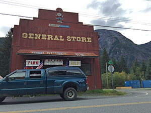
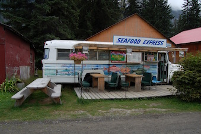

Hyder offers you an assortment of local businesses, including:
 - Seafood Express
- The General Store
- The Hardware Store
- The Post Office
- Sealaska Inn and Camp Run-A-Muck
-
Hyder Community Association
Including the Public Library, Museum, and Information Center
- Fish Creek Wildlife Observation Site
- Hyder Hides
- This N That Shop
Image Sources:
Source:commons.wikimedia.org
Source:www.tworvgypsies.us
Caleb S.